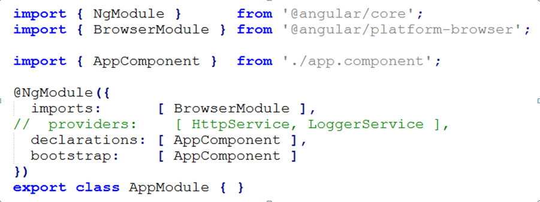
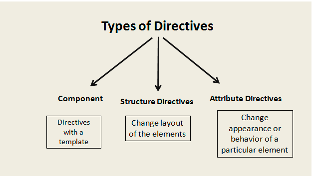
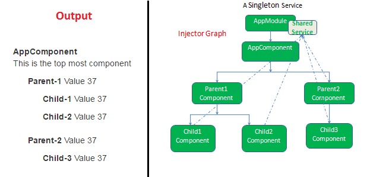

- Module
- Component
- Template
- Metadata
- Data Binding
- Service
- Directive
- Dependency Injection
- Every Angular app has at least one Angular module class, the root module.
- An Angular module, is a class with an @NgModule decorator.
- NgModule is a decorator function that takes a single metadata object whose properties describe the module.
- declarations - the view classes that belong to this module. [components | directives | pipes]
- imports - other exported modules needed by this module component templates. [BrowserModule | FormModule]
- providers - services become accessible in all parts of this module. [HttpService | LoggerService]
- bootstrap - the main application view, called the root component, that hosts all other app views. Only the root module should set this bootstrap property. [AppComponent]

- A component is a controller class with a template which mainly deals with a view of the application and logic on the page.
- @Component annotation is used to register component.
- There will be only one component per DOM element.

- Defines a component's view with its companion template.
- A form of HTML that tells Angular how to render the component.

app.component.html

- A way of processing the class.
- Consider a class called MyComponent.
- How would angular recognize it as component.
- Metadata (@Component decorator) is used to the class to tell Angular that MyComponent is a component.
- @Component configuration options:
- moduleId: sets the source of the base address [module.id]
- selector: html selector that tells Angular to create and insert an instance of this component. For example, if an app's HTML contains
, then Angular inserts an instance of the AppComponent view between those tags - template/templateUrl: module-relative address of this component's HTML template.
- providers: array of dependency injection providers for services that this component requires.
- Mechanism for coordinating parts of a template with parts of a component
- Pushes data values into the HTML from logic.
- Interpolation: Displays the component's property value within the HTML element.
- Property Binding: It passes the property from the parent to the child.
- Event Binding: It fires the event.
- Two-way Binding: This form binds property and event by using the ngModel directive in a single notation.
- Injected using Dependency Injection mechanism.
- Singleton classes that are responsible for doing a specific task only such as logging service, data service, message service, the configuration of application etc.

